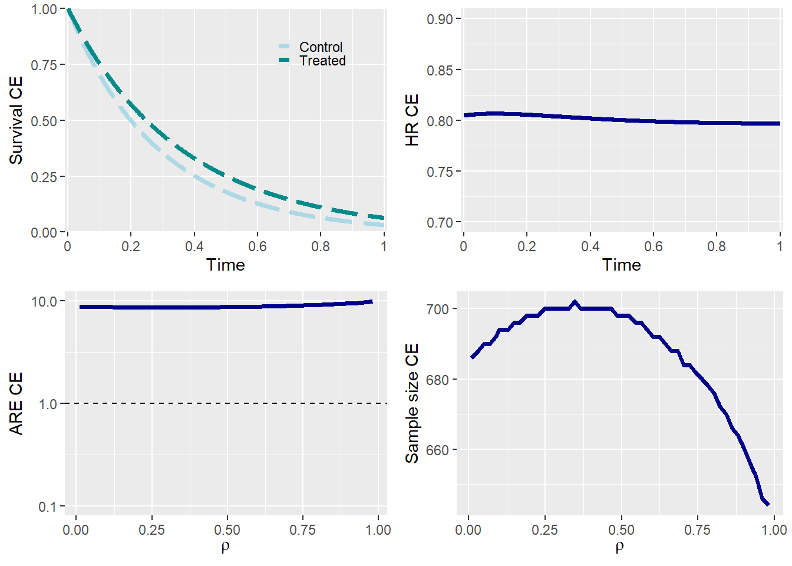

CompAREdesign: Time-to-event endpoint
Jordi Cortés Martínez, Marta Bofill Roig and Guadalupe Gómez Melis
2025-02-13
Case study: ZODIAC Trial
This example is based on the data from the ZODIAC trial [1].
ZODIAC was a multinational, randomised, double-blind, phase 3 study of vandetanib plus docetaxel (Sanofi - Aventis, Paris, France) versus placebo plus docetaxel in patients with locally advanced or metastatic NCSLC after progression following platinum-based first-line chemotherapy. The recent approval and increasing use of pemetrexed as first-line therapy in NSCLC suggest a continuing role for docetaxel as second-line therapy.
Input Parameters
First of all, the information for the components of the composite endpoint should be defined.
## Probabilities of observing the event in control arm during follow-up
p0_e1 <- 0.59 # Death
p0_e2 <- 0.74 # Disease Progression
## Effect size (Cause specific hazard ratios) for each endpoint
HR_e1 <- 0.91 # Death
HR_e2 <- 0.77 # Disease Progression
## Hazard rates over time
beta_e1 <- 2 # Death --> Increasing risk over time
beta_e2 <- 1 # Disease Progression --> Constant risk over time
## Correlation
rho <- 0.1 # Correlation between components
rho_type <- 'Spearman' # Type of correlation measure
copula <- 'Frank' # Copula used to get the joint distribution
## Additional parameter
case <- 3 # 1: No deaths; 2: Death is the secondary event;
# 3: Death is the primary event; 4: Both events are death by different causesWe set case = 3 because Death is the primary event:
Endpoint 1: Death
Endpoint 2: Disease progression
The meaning of all the parameters are described in the following table:
| Parameter | Description |
|---|---|
| p0_e1 | Probability of observing event 1 in control arm during follow-up |
| p0_e2 | Probability of observing event 2 in control arm during follow-up |
| HR_e1 | Effect size (Cause specific hazard ratios) for endpoint 1 |
| HR_e2 | Effect size (Cause specific hazard ratios) for endpoint 2 |
| beta_e1 | Hazard rate over time for endpoint 1 (>1: Increasing risk over time) |
| beta_e2 | Hazard rate over time for endpoint 2 (=1: Constant risk over time) |
| rho | Correlation between components |
| rho_type | Type of the correlation measure |
| copula | Copula used to get the joint distribution |
| case | Additional parameter:
|
ARE: Asymptotic Relatively Efficiency
Let’s consider probabilities in the control group of 0.59 and 0.74, with a treatment effect given by Hazard Ratios of 0.91 and 0.77 for Endpoints 1 and 2, respectively. If the correlation between the times of both components is low (e.g., 0.1), the Asymptotic Relative Efficiency (ARE) is 8.79.
Since the ARE is greater than 1, it is recommended to use the composite endpoint (CE), which combines both endpoints, as the primary endpoint of the trial. In other words, for a given significance level and power, the number of required events needed to achieve the same power would be 8.79 times higher if Endpoint 1 were used instead of CE.
Using the CE as the primary endpoint results in a more statistically efficient trial design regardless of the correlation \(\rho\) because \(ARE(\rho)>1\).
ARE_tte(p0_e1 = p0_e1 , p0_e2 = p0_e2,
HR_e1 = HR_e1 , HR_e2 = HR_e2,
beta_e1 = beta_e1 , beta_e2 = beta_e2,
rho = rho , rho_type = rho_type,
copula = copula , case = case,
plot_print = TRUE) ## [1] 8.791Effect size of the Composite Endpoint
effectsize_tte provides several summary measures of the
treatment effect:
gAHR(Geometric Average Hazard Ratio)AHR(Geometric Average Hazard Ratio)RMST Ratio(Restricted Mean Survival Time Ratio)Median Ratio(Median survival time ratio)
In addition, several measures of the behavior within each group are provided:
- RMST (Restricted Mean Survival Time)
- Median (Median survival time)
- Prob. E1 (Probability of observing endpoint 1)
- Prob. E2 (Probability of observing endpoint 2)
- Prob. CE (Probability of observing composite endpoint)
effectsize_tte(p0_e1 = p0_e1 , p0_e2 = p0_e2,
HR_e1 = HR_e1 , HR_e2 = HR_e2,
beta_e1 = beta_e1 , beta_e2 = beta_e2,
rho = rho , rho_type = rho_type,
copula = copula , case = case,
plot_print = TRUE) ## Effect measure Effect value | Group measure Reference Treated
## -------------- ------------ | ------------- --------- -------
## gAHR 0.8015 |
## AHR 0.8016 |
## RMST ratio 1.1633 | RMST 0.3918 0.4558
## Median ratio 1.2321 | Median 0.3212 0.3958
## | Prob. E1 0.5900 0.5557
## | Prob. E2 0.7400 0.7125
## | Prob. CE 0.9300 0.8847In the figure above, a slight increase in the HR of the CE is observed over time.
Sample size
samplesize_tte provides the required number of patients
for the trial using the CE as the primary endpoint as well as the sample
size for each component. In our case study, the sample size using the CE
would be 1118.
samplesize_tte(p0_e1 = p0_e1 , p0_e2 = p0_e2,
HR_e1 = HR_e1 , HR_e2 = HR_e2,
beta_e1 = beta_e1 , beta_e2 = beta_e2,
rho = rho , rho_type = rho_type,
copula = copula , case = case,
alpha = 0.025 , power = 0.90,
ss_formula = 'schoenfeld',
plot_print = TRUE) ## Endpoint Total sample size
## -------- -----------------
## Endpoint 1 9744
## Endpoint 2 1002
## Composite endpoint 1118Sample size of the CE depends on the correlation \(\rho\). In general, sample size increases as the correlation also increases. The observed decrease in sample size for high correlations is due to the fact that if we keep the proportion of observed events fixed, the events in the second component would need to occur almost entirely before the end of the follow-up period to avoid being prevented from being observed by the competing first event.
Influence of hazards rates over time on the effect size
The impact of hazard rate behavior over time on the treatment effect
can be analyzed using the function effectsize_tte. The
parameters beta_1 (\(\beta_1\)) and beta_2 (\(\beta_2\)) represent the shape parameters
of the Weibull marginal distributions for each component. A value of
\(\beta_i > 1\) indicates an
increasing risk over time, while \(\beta_i
< 1\) represents a decreasing risk, and \(\beta_i = 1\) corresponds to a constant
risk over time.
To examine how this parameter influences the treatment effect of the composite endpoint (CE), the hazard ratio (HR) of the CE is plotted over time. When both risks are constant, the HR is almost constant, while when there is an increasing risk of disease progression over time, the HR decreases over time.
## Hazard rates over time Scenario 1
beta_e1 <- 1 # Death --> constant over time
beta_e2 <- 2 # Disease Progression --> increase over time
effectsize_tte(p0_e1 = p0_e1 , p0_e2 = p0_e2,
HR_e1 = HR_e1 , HR_e2 = HR_e2,
beta_e1 = beta_e1 , beta_e2 = beta_e2,
rho = rho , rho_type = rho_type,
copula = copula , case = case,
plot_print = TRUE) ## Effect measure Effect value | Group measure Reference Treated
## -------------- ------------ | ------------- --------- -------
## gAHR 0.8046 |
## AHR 0.8046 |
## RMST ratio 1.1310 | RMST 0.3070 0.3472
## Median ratio 1.1310 | Median 0.2820 0.3190
## | Prob. E1 0.5900 0.5557
## | Prob. E2 0.7400 0.7381
## | Prob. CE 0.9986 0.9943## Hazard rates over time Scenario 2
beta_e1 <- 1 # Death --> constant over time
beta_e2 <- 1 # Disease Progression --> constant over time
effectsize_tte(p0_e1 = p0_e1 , p0_e2 = p0_e2,
HR_e1 = HR_e1 , HR_e2 = HR_e2,
beta_e1 = beta_e1 , beta_e2 = beta_e2,
rho = rho , rho_type = rho_type,
copula = copula , case = case,
plot_print = TRUE) ## Effect measure Effect value | Group measure Reference Treated
## -------------- ------------ | ------------- --------- -------
## gAHR 0.8039 |
## AHR 0.8039 |
## RMST ratio 1.2055 | RMST 0.2804 0.3380
## Median ratio 1.2454 | Median 0.1990 0.2478
## | Prob. E1 0.5900 0.5557
## | Prob. E2 0.7400 0.7332
## | Prob. CE 0.9676 0.9360Summary plots
plot_tte returns all the relevant plots for the trial
design if summary=TRUE.
plot_tte(p0_e1 = p0_e1 , p0_e2 = p0_e2,
HR_e1 = HR_e1 , HR_e2 = HR_e2,
beta_e1 = beta_e1 , beta_e2 = beta_e2,
rho = rho , rho_type = rho_type,
copula = copula , case = case,
summary = TRUE) 
If summary=FALSE it is possible to choose the plot to
obtain (‘survival’, ‘effect’, ‘ARE’, ‘samplesize’) and even more it is
possible to modify it.
plot_tte(p0_e1 = p0_e1 , p0_e2 = p0_e2,
HR_e1 = HR_e1 , HR_e2 = HR_e2,
beta_e1 = beta_e1 , beta_e2 = beta_e2,
rho = rho , rho_type = rho_type,
copula = copula , case = case,
summary = FALSE , type = 'ARE') +
ggtitle('Asymptotic Relative Efficiency') + theme_bw()
References
- Herbst RS, Sun Y, Eberhardt WEE, Germonpré P, Saijo N, Zhou C et al. Vandetanib plus docetaxel versus docetaxel as second-line treatment for patients with advanced non-small-cell lung cancer (ZODIAC): a double-blind, randomised, phase 3 trial. Lancet Oncol. 2010;11(7):619–26.